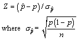
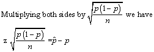
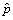
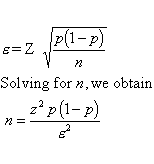
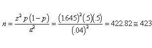
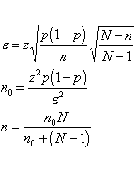

|
7.
Product and Process Comparisons
7.2. Comparisons based on data vrom one process 7.2.7. How can we determine whether the proportion of defectives produced by a process has changed from the "nominal" value?
|
|||
| Derivation of formula for required sample size when testing proportions | The methods of determining
sample sizes for proportions is similar to the methods use for sampling
to estimate the normal mean. Although the sampling distribution for proportions
actually follows a binomial distribution. The normal distribution can be
used to approximate the binomial distribution when n is large.
The test statistic is   The sampling error, e , is equal to (  - p) , the difference between sample proportion and the parameter to be estimated (p). This sampling error can be defined as |
||
| Formula for required sample size |
 |
||
| Steps to calculate required sample size | To calculate the sample size for proportions
the following three quantities must be defined:
The guess at p is based on some form of prior knowledge. (But really, how can we expect to state a value for the very item that we are taking a sample in order to determine it?) It turns out that if we take p = .5 we obtain the largest sample size possible. This implies the widest confidence intervals and the highest possible cost. Hence we achieve the maximum information, and the highest precision, but at a price. We spent more money and time. |
||
| How to test proportions | Let us conclude with an example.
A department manager wished to to have 90% confidence of estimating the proportion of nonconformities in the product that he is responsible for. Not knowing the true value, he indicates that he wants to be within 4% of the true (but unknown) value. Lacking any further information about the true proportion he accepts as a first guess p = .5 (this is the worst case choice of p, leading to the largest required sample size). With these criteria on the table, we get:
 |
||
| How to test proportions | The Finite Population Correction Factor
In order to determine the sample size when sampling without replacement, the finite population correction factor is applied as follows  |
||